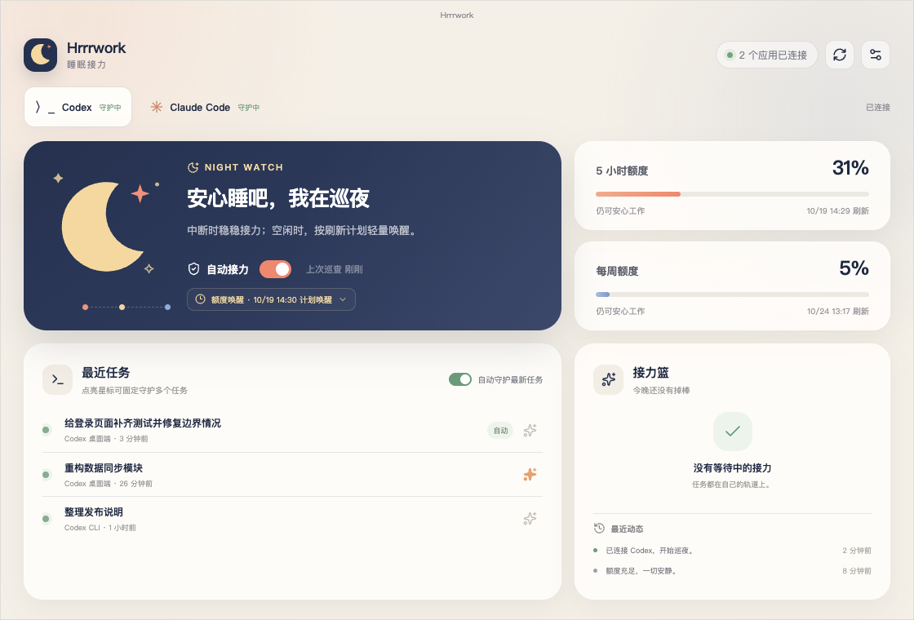

macOS
一个 Universal 版本，适配两种 Mac。
下载 DMG 或下载 ZIP ↗GOOD NIGHT. GOOD WORK.
把晚安留给自己，把接力交给 Hrrrwork。
Codex / Claude Code，中断时接力，
空闲时，也能在刷新后轻轻唤醒。
macOS · Windows · Linux ／ 免费开源，本地运行
A QUIET LITTLE COMPANION
额度、任务与接力进度，
都在这个小小的窗口里。

✦ Codex + Claude Code
✦ 原任务继续接力
✦ 可选轻量额度唤醒
✦ 托盘里安静守候
A SOFT HELLO. RIGHT ON TIME.
v1.1 新增 · 可选开启
五小时刷新后，一句简短的问候。
即使额度尚未用完，也可按已知五小时刷新时间发起一轮简短对话。它与中断接力分开设置，各自安静值班。
默认关闭，开启后会消耗少量用量。Codex 自动优先可用的 Luna 轻量模型；Claude Code 默认 Haiku。实际起算、模型权限和额度由服务方决定，不保证“锁定”五小时窗口。缺少刷新时间时等待同步。
THREE STEPS. THEN SWEET DREAMS.
登录你的编码助手，打开 Hrrrwork。
接下来的等待，交给它。
自动守护最新任务，也可以点亮星标，为多个重要任务留下位置。
读取 5 小时和每周额度。发现中断后，把任务放进接力篮，等待真实刷新时间。
再次确认原中断轮次，随后继续同一任务。你已手动继续时，会自动取消这次接力。
READY WHEN YOU ARE
选好你的系统，下载、打开，开启自动接力。
一个 Universal 版本，适配两种 Mac。
下载 DMG 或下载 ZIP ↗轻巧的便携版，打开即可开始巡夜。
下载 EXE Portable · x64AppImage 直接运行，或选择 DEB 安装。
下载 AppImage 或下载 DEB ↗v1.1.0 · 查看版本记录 ↗
curl -fL 'https://github.com/ChoneyChen/Hrrrwork/releases/download/v1.1.0/Hrrrwork-1.1.0-mac-universal.dmg' -o Hrrrwork.dmg下载到当前目录，打开 DMG 后将 Hrrrwork 拖入“应用程序”。
v1.1 支持 Codex 和 Claude Code。Hrrrwork 自动检测已安装的应用，分别展示额度与任务。先安装并登录你使用的编码助手，也可在设置中指定可执行文件路径。
可以。在“设置 → 额度唤醒”中按应用开启，默认新开专用对话，也可选择已有空闲对话及模型。无需任务中断或用量达到 100%，到已知五小时刷新时间加缓冲后，发送“唤醒，仅需回复收到”。
不能保证。唤醒是一轮真实请求，会消耗少量用量；不同模型可能使用不同计量桶，窗口起算和模型费用由服务方决定。已有新窗口用量时跳过多余唤醒，周额度阻塞时等待；缺少官方刷新时间时不猜测或循环发消息。
选择 Claude Code，点击“连接 Claude Code”。Hrrrwork 会配置本地状态栏与事件桥接，保留已有状态栏；下一轮会话开始后同步额度。只接力明确的额度错误，缺少刷新时间时等待数据；断开后恢复原状态栏。
自动接力需要电脑保持开机、联网，并让 Hrrrwork 在后台运行。关掉主窗口后，它仍会驻留系统托盘；电脑休眠期间无法执行任务，唤醒后会继续检查。
发送前会再次检查原任务的中断轮次。如果你已经手动继续，或任务已有新的进展，Hrrrwork 会取消队列中的这次接力。
设置、待接力任务和简短动态保存在本机。Hrrrwork 通过编码助手的本地接口同步额度与任务状态，不另行保存账号令牌。